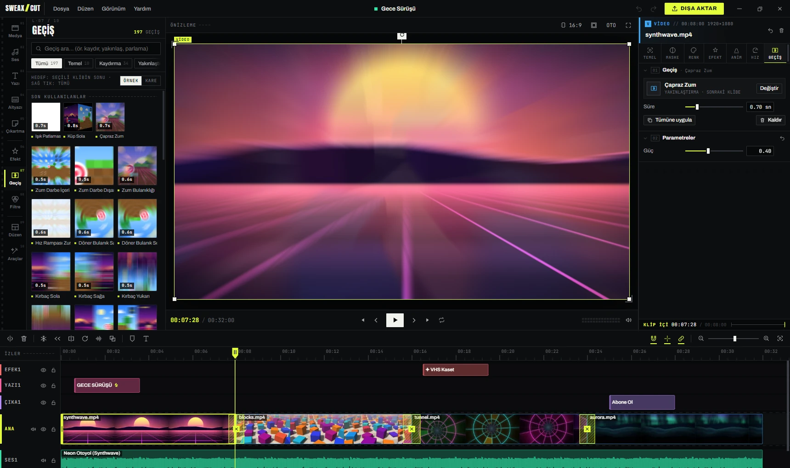
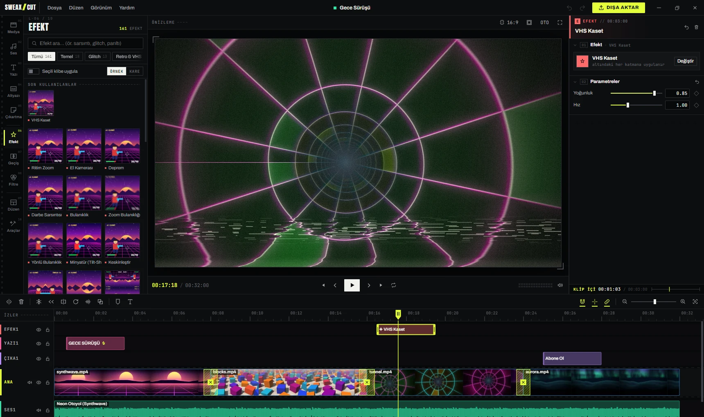
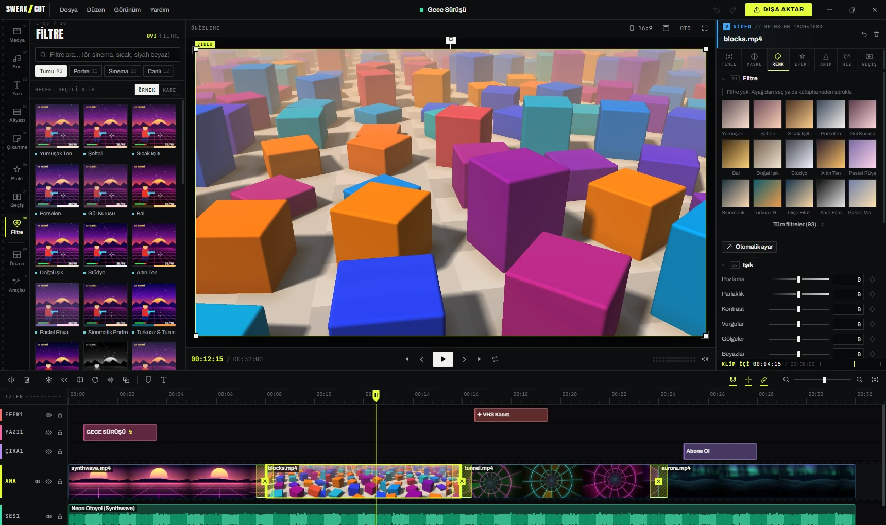
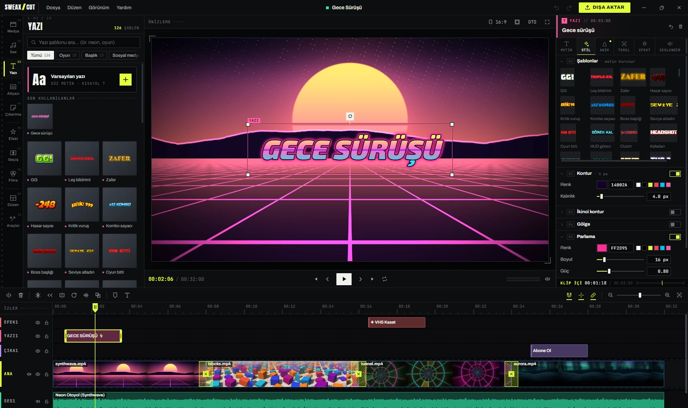
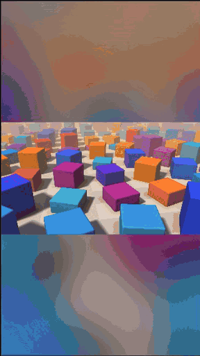
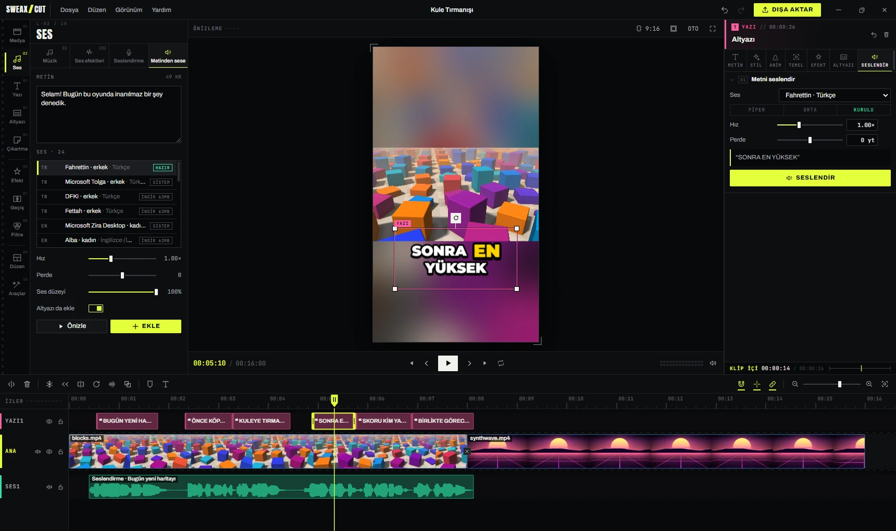
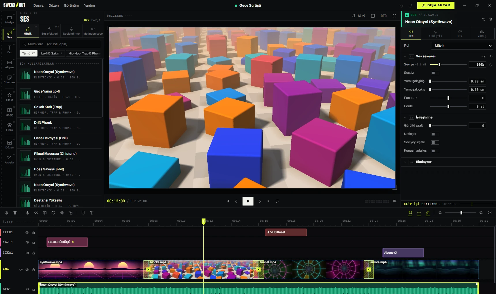
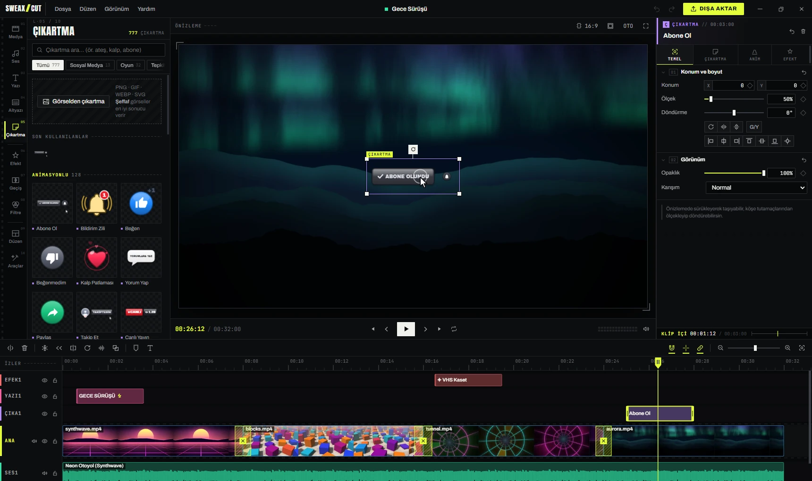
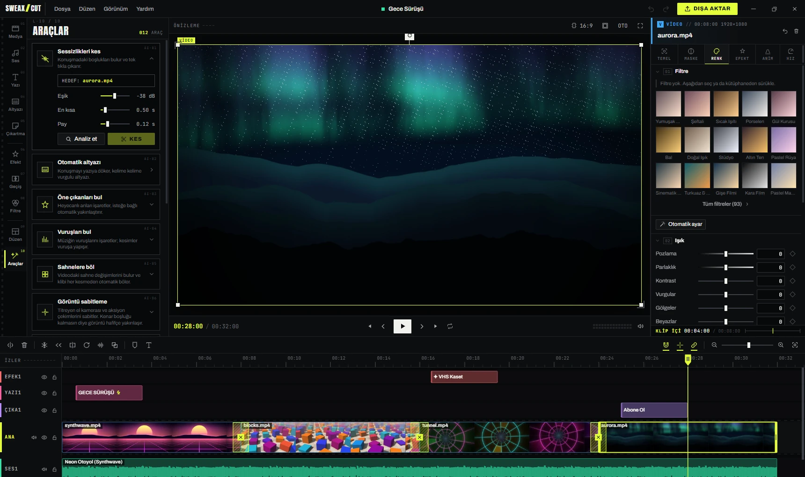
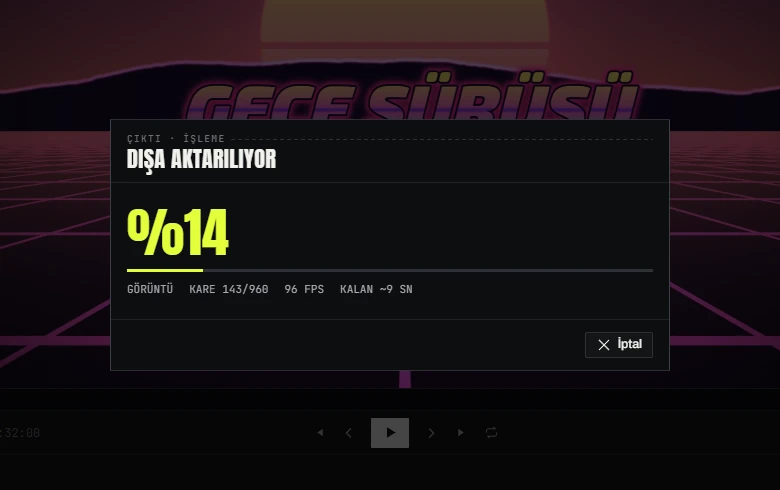

A free video editor for Windows.Windows için ücretsiz video kurgu programı.
Cut, add transitions, effects, text and captions, then export with your graphics card. Captions, voice-over and the AI tools run on your PC, without the internet. Kes, geçiş, efekt, yazı ve altyazı ekle, sonra ekran kartınla dışa aktar. Altyazı, seslendirme ve yapay zekâ araçları internet olmadan, kendi bilgisayarında çalışır.
Try a cutBir kesim dene
Four generated clips and three cuts. Pick a cut, then a transition, and lay an effect over everything if you like. These are 16 of the app's 197 transitions and 9 of its 161 effects, running the same GLSL code in your browser. Dört üretilmiş klip, üç kesim. Bir kesim seç, sonra bir geçiş seç; istersen hepsinin üstüne bir efekt koy. Buradakiler uygulamadaki 197 geçişin 16'sı ve 161 efektin 9'u; tarayıcında aynı GLSL koduyla çalışıyorlar.

Drag on the timeline to scrub. The clips are drawn live by small shaders written for this page; the audio lane is only a picture. In the app the same transitions run on your own footage, in preview and in export. Zaman çizelgesinde sürükleyerek gez. Klipleri bu sayfa için yazılmış küçük gölgelendiriciler canlı çiziyor; ses izi yalnızca görsel. Uygulamada aynı geçişler senin görüntünde, hem önizlemede hem dışa aktarmada çalışır.
TransitionGeçiş
Applies to the selected cut.Seçili kesime uygulanır.
Effect layerEfekt katmanı
Sits above all four clips.Dört klibin de üstünde durur.
Counted from the codeKoddan sayıldı
Each number was read from the app's content registry while version 2.0.1 was running. The bars use a log scale so the small ones stay visible. Her sayı, 2.0.1 sürümü çalışırken uygulamanın içerik kayıt defterinden okundu. Küçükler de görünsün diye çubuklar logaritmik ölçekte.
197 ways to get from one clip to the nextBir klipten ötekine 197 geçiş
Slides, zooms, light flashes, glitch cuts, shapes, 3D cubes and page turns, in 12 groups. 125 come from the open gl-transitions collection and 72 were written for SWEAXCUT. Kaydırma, zum, ışık flaşı, glitch kesme, şekiller, 3B küpler ve sayfa çevirme; 12 grupta. 125'i açık kaynak gl-transitions koleksiyonundan, 72'si SWEAXCUT için yazıldı.
- Each thumbnail can play on a sample frame or on your own frame.Küçük resimler örnek karede ya da kendi karende oynayabilir.
- Duration and parameters are set per cut; one click applies a transition to every cut.Süre ve ayarlar her kesim için ayrı; tek tıkla bir geçiş bütün kesimlere uygulanır.
161 effects, 93 colour filters161 efekt, 93 renk filtresi
Game-style hit flashes, VHS, CRT, film grain, weather, light leaks and party lights, in 11 groups. Put an effect on one clip, or on its own layer so it changes everything below it. Oyun tarzı vuruş flaşları, VHS, tüplü ekran, film greni, hava durumu, ışık sızıntısı ve parti ışıkları; 11 grupta. Efekti tek bir klibe koy ya da kendi katmanına koy, altındaki her şeyi değiştirsin.
- Effect parameters and colour sliders can be keyframed.Efekt ayarları ve renk kaydırıcıları anahtar kareyle canlandırılabilir.
- Exposure, contrast, temperature, highlights, shadows, HSL for 8 colour ranges, sharpness, vignette and grain.Pozlama, kontrast, sıcaklık, vurgular, gölgeler, 8 renk aralığı için HSL, keskinlik, vinyet ve gren.
- 24 blend modes, 8 mask shapes with soft edges, chroma key.24 karışım modu, yumuşak kenarlı 8 maske şekli, krom anahtar.


Titles that moveHareket eden başlıklar
126 ready-made text styles, 88 text animations and 101 fonts, every one checked for Turkish letters. 126 hazır yazı stili, 88 yazı animasyonu ve 101 yazı tipi; her birinde Türkçe harfler denetlendi.
- Outline, second outline, shadow, glow and a background box, each with its own switch.Kontur, ikinci kontur, gölge, parlama ve arka plan kutusu; her birinin kendi düğmesi var.
- Gradient fill and curved text.Degrade dolgu ve kavisli yazı.
- Separate in, out and loop animations, for text and for clips (137 clip animations).Giriş, çıkış ve döngü animasyonları ayrı; yazı için de klip için de (137 klip animasyonu).

Captions and voice-over, made on your PCAltyazı ve seslendirme, bilgisayarında
The voice in this clip was made with the app's text-to-speech, and the captions on it were written by its speech recognition. Neither step used the internet. Bu klipteki ses uygulamanın metinden sese aracıyla yapıldı, üstündeki altyazıları da konuşma tanıma yazdı. İkisi de internet kullanmadı.

Auto captionsOtomatik altyazı
- whisper.cpp runs on your CPU. On first use you pick a model and it is downloaded once; the default, Small, is 190 MB.whisper.cpp işlemcide çalışır. İlk kullanımda bir model seçilir ve bir kez indirilir; varsayılan Small 190 MB.
- 45 caption styles with word-by-word highlighting, keyword colours and optional emoji.Kelime kelime vurgulu 45 altyazı stili, anahtar kelime rengi ve isteğe bağlı emoji.
- Fix a word by typing; timing stays. Import SRT, VTT and ASS, export SRT.Yanlış kelimeyi yazarak düzelt, zamanlama kalır. SRT, VTT ve ASS içe aktarılır, SRT dışa aktarılır.
Text to speechMetinden sese
- Piper voices: Turkish "Fahrettin" comes with the installer, 21 more in 10 languages can be downloaded.Piper sesleri: Türkçe "Fahrettin" kurulumla gelir, 10 dilde 21 ses daha indirilebilir.
- The Windows voices on your PC work too.Bilgisayarındaki Windows sesleri de kullanılabilir.
- Record your own voice from the microphone.Mikrofondan kendi sesini kaydedebilirsin.

Music and sound effects, synthesizedMüzik ve ses efekti, sentezle
The 22 music tracks and 102 sound effects are generated by the app from oscillators, noise and filters. There are no samples inside, so there is nothing to license. 22 müzik parçası ve 102 ses efektini uygulama osilatör, gürültü ve süzgeçlerle kendisi üretir. İçinde hazır ses örneği yok, lisanslanacak bir şey de yok.
- 40 voice changers: chipmunk, monster, robot, radio and more.40 ses değiştirici: sincap, canavar, robot, telsiz ve dahası.
- Noise reduction, speech clarity, loudness levelling, 3-band EQ.Gürültü azaltma, konuşmayı netleştirme, ses seviyesi eşitleme, 3 bantlı EQ.
- Music ducks under speech by itself; beats can be found and marked.Konuşma olunca müzik kendiliğinden kısılır; vuruşlar bulunup işaretlenebilir.

777 stickers777 çıkartma
649 Twemoji emoji, 117 animated stickers drawn in code and 11 shapes. Your own images can be stickers too. 649 Twemoji emojisi, kodla çizilmiş 117 animasyonlu çıkartma ve 11 şekil. Kendi görsellerin de çıkartma olabilir.
- Subscribe and like buttons, view counters, crosshairs, hit markers, health and XP bars, trophies, comic bursts, speech bubbles, arrows and lower thirds.Abone ol ve beğen düğmeleri, izlenme sayacı, nişangâh, vuruş işareti, can ve XP barları, kupa, çizgi roman patlamaları, konuşma balonları, oklar ve alt bantlar.

The tedious parts, automatedUğraştıran işler, otomatik
Background removal, stabilising, reframing and the rest run locally, with MediaPipe models and ffmpeg filters that come with the installer. Arka plan silme, sabitleme, yeniden kadrajlama ve diğerleri yerelde çalışır; MediaPipe modelleri ve ffmpeg süzgeçleri kurulumla gelir.

What you see is what gets exportedÖnizlemede ne görüyorsan o çıkar
The preview and the export use the same WebGL2 compositor, so effects, transitions and text look the same in the file. Your graphics card encodes the video when it can. Önizleme ile dışa aktarma aynı WebGL2 bileşimciyi kullanır; efekt, geçiş ve yazı dosyada da aynı görünür. Ekran kartın uygunsa videoyu o kodlar.
- NVIDIA NVENC, AMD AMF and Intel Quick Sync are tested once with a short encode and remembered for three days. If none works, the CPU encoders take over.NVIDIA NVENC, AMD AMF ve Intel Quick Sync kısa bir deneme kodlamasıyla bir kez sınanır ve üç gün hatırlanır. Hiçbiri çalışmazsa işlemci kodlayıcıları devreye girer.
- No watermark and no length limit.Filigran ve süre sınırı yok.

12.5 secondssaniye
to export the 32-second 1080p30 project from the recording above (four clips, three transitions, a title, a sticker, an effect layer and music) with h264_nvenc on the author's PC with an RTX 4070 SUPER. One run, development build; other hardware will differ. Yukarıdaki kayıttaki 32 saniyelik 1080p30 projeyi (dört klip, üç geçiş, başlık, çıkartma, efekt katmanı ve müzik) yazarın RTX 4070 SUPER'li bilgisayarında h264_nvenc ile dışa aktarma süresi. Tek ölçüm, geliştirme sürümü; başka donanımda farklı olur.

Keyboard shortcutsKlavye kısayolları
Close to what CapCut and Premiere users already know. The full list is under Help in the app.CapCut ve Premiere alışkanlıklarına yakın. Tam listesi uygulamada Yardım menüsünde.
Your videos stay on your PCVideoların bilgisayarında kalır
Nothing is uploaded. There is no account, and the code has no analytics, telemetry or update check. The app goes online in two cases, and only when you start them: Hiçbir şey yüklenmez. Hesap yok; kodda analiz, telemetri ya da güncelleme denetimi yok. Uygulama yalnızca iki durumda, o da sen başlatınca internete çıkar:
| When | Ne zaman | From | Nereden |
|---|---|---|---|
| You make captions with a speech model that is not on your disk yetDiskinde olmayan bir konuşma modeliyle altyazı çıkarırken | huggingface.co (hf-mirror.com if that fails twice)(iki kez olmazsa hf-mirror.com) | ||
| You choose a Piper voice that is not installed yetKurulu olmayan bir Piper sesi seçtiğinde | huggingface.co |
Downloads are checked against their size and checksum.İndirilen dosyalar boyut ve sağlama toplamıyla doğrulanır.
Where your files liveDosyaların nerede
| Projects (.sweax)Projeler (.sweax) | Documents\SWEAXCUT\Projeler |
| Autosave, every 45 sOtomatik kayıt, 45 sn'de bir | %APPDATA%\SWEAXCUT\autosave |
| Speech models and voicesKonuşma modelleri ve sesler | %APPDATA%\SWEAXCUT\models |
| ExportsDışa aktarılanlar | Videos\SWEAXCUT or any folder you pickya da seçtiğin klasör |
| The programProgram | %LOCALAPPDATA%\Programs\sweaxcut |
A project remembers where its videos are. If you move them, it will ask for them.Proje, videoların yerini hatırlar. Taşırsan onları bulamaz ve sorar.
InstallKurulum
- Download SWEAXCUT-Kurulum-2.0.2.exe from the latest release on GitHub.GitHub'daki son sürümden SWEAXCUT-Kurulum-2.0.2.exe dosyasını indir.
- Run it. It installs for your user only, adds a desktop shortcut and opens the app.Çalıştır. Yalnızca senin kullanıcın için kurulur, masaüstüne kısayol koyar ve programı açar.
- Pick an aspect ratio on the start screen and drop a video on the window.Başlangıç ekranında bir en-boy oranı seç ve videoyu pencereye bırak.
The installer is not code-signed, so Windows SmartScreen may show a blue warning. Choose More info, then Run anyway. Kurulum dosyası imzalı olmadığı için Windows SmartScreen mavi bir uyarı gösterebilir. Ek bilgi, ardından Yine de çalıştır'ı seç.
Windows 10 or 11, 64-bit. A graphics card with WebGL2 is needed for the preview; hardware encoders are used when present.Windows 10 ya da 11, 64 bit. Önizleme için WebGL2 destekli bir ekran kartı gerekir; donanım kodlayıcıları varsa kullanılır.
Build from sourceKaynaktan derle
Electron 33, React 18 and Vite 6, plain JavaScript. The whisper.cpp binaries are not in the repository; the README explains where they come from.Electron 33, React 18 ve Vite 6, düz JavaScript. whisper.cpp ikilileri depoda yok; nereden alınacakları README'de yazıyor.
# dependencies, MediaPipe runtimebağımlılıklar, MediaPipe çalışma zamanı npm install # Piper, RNNoise models and FFprobe into vendor/Piper, RNNoise modelleri ve FFprobe vendor/ içine npm run prepare:vendor # development: vite, then Electrongeliştirme: vite, sonra Electron npm run dev npm run start:dev # installer into release/kurulum dosyası release/ içine npm run dist